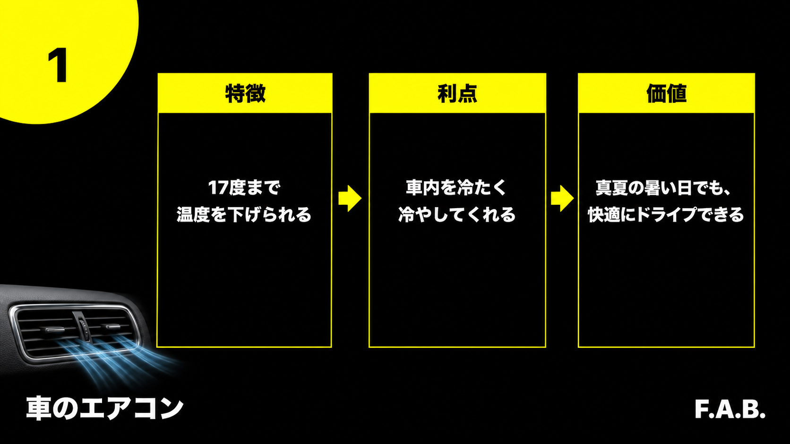
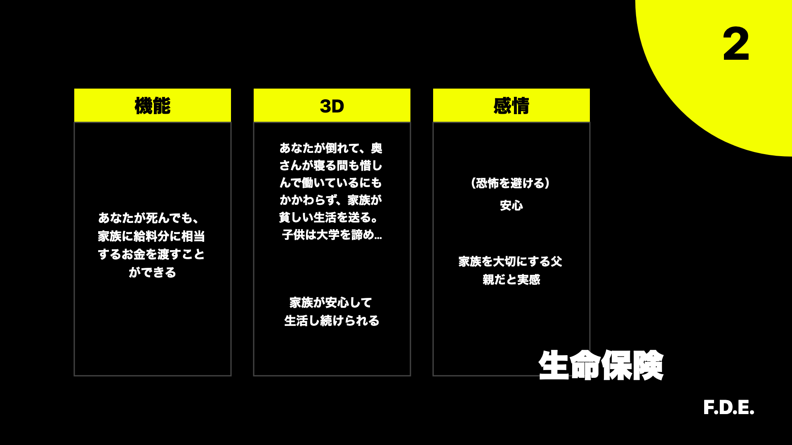

Sales Writing / Benefit Writing
商品の特徴を、ユーザーが望んでいる結果・変化・感情へつなげるための、FABとFDEの実践整理。
ベネフィットとは、商品によってユーザーの欲求が満たされること。抱えている問題が解決され、望む未来へ近づけること。
商品は手段。ベネフィットは、その商品によって得られる結果・変化。
人は商品や機能そのものではなく、その商品によって自分に何が起きるのかを求めている。
有名な「ドリルと穴」の話も同じ。ユーザーが欲しいのはドリルそのものではなく、ドリルによって開けられる穴。さらに、その穴によって棚を取り付け、部屋を使いやすくできることまで求めている場合もある。
暑い、時間がない、不安、面倒、うまくできない、理想へ近づきたい。
商品、サービス、機能、仕組みは、現状から望む未来へ移るための手段。
問題が解決され、生活や感情が変わり、望む状態へ近づく。
スペック、機能、制度、サービス内容、素材、手順、メソッド。
これは「何があるか」の説明。読者がその価値をすでに理解していなければ、欲しい理由にはならない。
何が楽になるか、何を避けられるか、どんな判断ができるか、生活や感情がどう変わるか。
ここまで言語化されると、読者は「自分に関係ある」と受け取りやすい。
専門家には、特徴だけで価値が伝わることがある。たとえばマイクの専門的な性能を見れば、音楽関係者はそれが何を意味するか分かる場合がある。
しかし、多くの読者は特徴から自分の変化までを自動で変換しない。だからコピー側で、特徴からベネフィットまでの橋をかける必要がある。
ベネフィットを作るためのフレームワークが「FAB」。Feature、Advantage、Benefitの順に、商品側の事実からユーザー側の価値へ発想を広げる。

商品やサービスが持つ機能、仕様、仕組み、素材、制度など。
車のエアコン：17度まで温度を下げられる。
その特徴によって、何が可能になるか。どのような点で優れているか。
車のエアコン：車内を冷たく冷やしてくれる。
ユーザーの生活、感情、判断、行動、未来に起きる結果や変化。
車のエアコン：真夏でも快適にドライブできる。
Feature・Advantage・Benefitの境界には、文脈によって重なる部分もある。FABは正解を分類するためではなく、特徴から発想を広げ、ユーザーにとっての価値を増やすためのフレームワーク。
特徴とベネフィットには、基本的に原因と結果の関係がある。特徴が原因となり、その結果としてユーザー側の変化が生まれる。次の4つの問いは、その因果関係をたどるために使う。
| 問い | 発想できること | 車のエアコンで考える |
|---|---|---|
| これをやったら（これを知ったら）、どうなる（どう結果が変化する）？ | 特徴によって起きる結果や、使用前後の変化。 | 設定温度を下げると、暑かった車内の温度が下がる。 |
| これは、何をしてくれる？ | 特徴の直接的な作用、利点、可能になること。 | 車内を冷たく冷やし、暑さを和らげてくれる。 |
| これは、ユーザーにとって何を意味する？ | 生活、行動、感情、未来における価値。 | 真夏の移動でも、暑さに消耗せず快適にドライブできる。 |
| なぜ、この特徴があるのか？ | 特徴が解決する問題と、満たそうとしている欲求。 | 車内の暑さや不快感を減らし、移動時間を過ごしやすくするため。 |
フェラーリには、高い走行性能、象徴的なデザイン、希少性などの特徴がある。その価値は「速く走れる」「運転を楽しめる」だけではない。
あるユーザーにとっては、成功した証を持てる、周囲から成功者として見られる、憧れられる存在になれる、自分に自信を持てることを意味する。
同じ特徴でも、ユーザーの欲求が違えば、意味するベネフィットも変わる。
特徴・利点・価値を複数の商品で比べると、ベネフィットへの変換がイメージしやすくなる。
| 題材 | Feature / 特徴 | Advantage / 何をしてくれるか | Benefit / ユーザーにとっての価値 |
|---|---|---|---|
| Uber Eats | スマホで食事を注文できる。 | 外出せずに、自宅や職場へ食事を届けてもらえる。 | 料理する気力や時間がない時でも、空腹や移動の負担を減らして食事を済ませられる。 |
| シャワーヘッド | 水流や機能に特徴がある。 | 毎日のシャワー体験が変わる。洗いやすさ、肌あたり、節水などの利点が出る。 | 毎日使う時間が、ただ洗う時間ではなく、快適さや満足を感じる時間になりやすい。 |
| ルンバ | 自動で掃除する。 | 自分が掃除機をかけなくても床掃除が進む。 | 掃除に使っていた時間と気力を減らし、帰宅時に部屋が整っている安心を得やすい。 |
| 256GB iPhone | 保存容量が大きい。 | 写真、動画、アプリを多く保存できる。 | 容量不足で思い出を消す迷いや、撮りたい瞬間に保存できないストレスを減らせる。 |
| 車内エアコン | 17度まで温度を下げられる。 | 車内を冷たく冷やしてくれる。 | 真夏の暑い日でも、快適にドライブできる。 |
| 速読 | 読む速度を上げる技術を学ぶ。 | 同じ時間で読める量が増える。 | 限られた時間でも知識を取り入れやすくなり、学習や仕事の遅れへの焦りを減らせる。 |
| 投資アラート | 推奨情報やアラートが届く。 | 自分で常に市場を見続けなくても、判断材料を受け取れる。 | 情報を見逃す不安や、調べ続ける負担を減らして、次の判断へ進みやすくなる。 |
| Smart EX | スマホなどで新幹線予約を扱える。 | 窓口に並ばず、予約や変更をしやすい。 | 移動前の手間や焦りを減らし、予定変更にも対応しやすくなる。 |
| AirPods | ワイヤレスで耳に装着できる。 | コードに邪魔されず音声を聞ける。 | 移動中、作業中、運動中でも身軽に音楽や通話を使いやすくなる。 |
| GoProの防水機能 | 防水機能がある。 | 水辺や水中でも撮影できる。 | 海、川、雨、アクティビティ中の瞬間まで残しやすく、思い出の範囲が広がる。 |
題材は講座・参考動画で扱われた例を中心に、特徴から価値への因果が分かる形へ整理している。
「便利」「快適」「安心」「効率的」もベネフィットだが、言葉が抽象的なままだと、ユーザーは自分の生活に置き換えにくい。いつ、どこで、何が変わり、どう感じるかまで具体化すると、結果をイメージしやすくなる。
便利、快適、安心、効率的、スムーズ、経済的など。
間違いではないが、具体的に何が変わるかが見えないと弱い。
何時に、どこで、誰が、何に困らず、どんな気持ちになれるかまで見える。
ユーザーが「それが欲しかった」と受け取りやすい。
「防水です」だけだと特徴。「水辺でも撮れます」だと利点。「濡れることを気にせず、旅行やアクティビティの一番残したい瞬間を撮れる」まで行くと、欲求に近づく。
具体化する時の5項目
いつ起きるか。どこで起きるか。誰に関係するか。使用前後で何が変わるか。その結果どんな感情になるか。
ベネフィットは、機能的ベネフィット、3Dベネフィット、感情的ベネフィットの3種類に分けて考えられる。英語表記の頭文字を取ったものが「FDE」。

商品によって直接できるようになること。機能がもたらす直接的な結果。
その結果が起きる未来を、具体的な場面として立体的に描いたもの。
その結果によって得られる感情、避けられる感情、実感できる自分の姿。
機能的ベネフィット：自分が亡くなっても、家族に給料分に相当するお金を渡せる。
3Dベネフィット：保険がなければ、自分が倒れた後、妻が寝る間も惜しんで働いているにもかかわらず、家族は貧しい生活を送り、子どもは大学を諦めるかもしれない。生命保険があれば、家族が安心して生活を続けられる。
感情的ベネフィット：家族の生活が崩れる恐怖を避けられる。安心できる。家族を大切にする父親であることを実感できる。
機能的ベネフィット：暑い車内を冷やせる。
3Dベネフィット：真夏の渋滞や長距離移動でも、汗だくにならず、同乗する家族と落ち着いて過ごせる。
感情的ベネフィット：暑さによる不快感やいら立ちを減らし、安心して移動を楽しめる。
機能だけで終わらず、その機能が生活をどう変えるのか、本人にどんな感情や自己認識をもたらすのかまで広げることがFDEの役割。
最終ルール
ベネフィットは、商品の特徴をそれらしい言葉へ言い換えることではない。特徴と結果の因果関係をたどり、相手が本当に望んでいる変化までつなげること。
この資料は、ダイレクト出版セールスライティングスクールの認定講座1日目、ベネフィットライティング参考動画、追加のベネフィットライティング講義をもとに、部内共有用へ再構成したもの。
逐語録ではなく、ベネフィットの意味・作り方・種類を理解しやすい順番へ整理している。